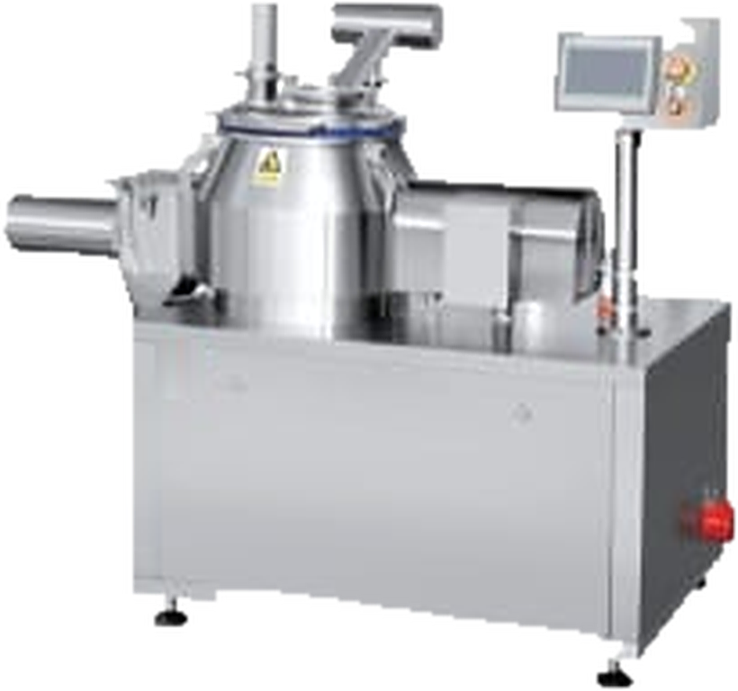
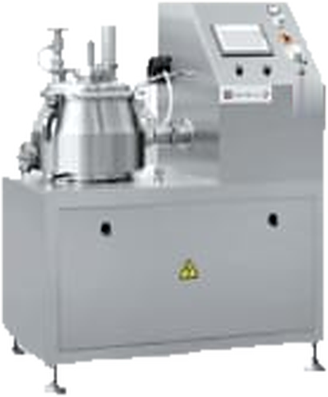
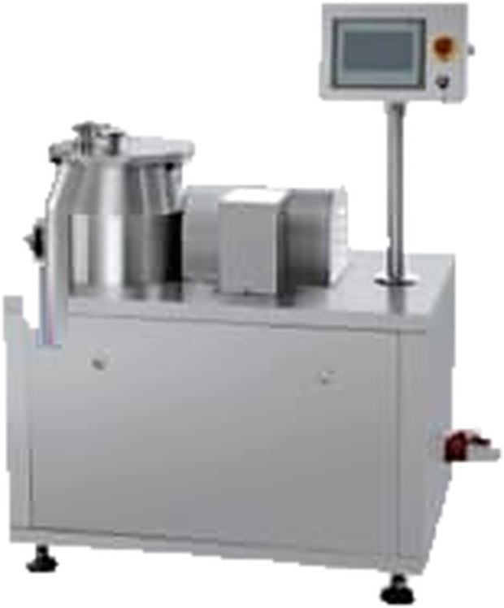

Preparación y Manejo de Polvos
Granulador Mezclador Húmedo Serie LHS
Equipo clave en la producción de formas sólidas: realiza el mezclado y la granulación húmeda de principios activos y excipientes, o la preparación de masa húmeda. Integra mezclado, granulación y calibrado, cuenta con control automático por PLC y cumple con cGMP y la farmacopea. Se utiliza en la industria farmacéutica, alimentaria y química.
Alto cizallamiento
Control PLC
Certificación CE
Ficha técnica
Características técnicas
| Serie | LHS |
| Funciones | Mezclado, granulación húmeda y calibrado en línea |
| Principio de funcionamiento | El material se carga por elevador o por vacío. El agitador lo mantiene en un flujo de cizallamiento multidimensional mientras se incorpora el aglutinante (por pistola o manualmente). Los puentes líquidos aglomeran el polvo fino en gránulos, que el cortador (chopper) lleva a la forma y el tamaño buscados. Al terminar, el granulado se descarga y se calibra en línea para pasar al lecho fluido para su secado |
| Equipo principal | Cuba de producto, eje de agitación, sistema de descarga, cortador (chopper), tapa de la cuba, plataforma, granulador calibrador y componentes eléctricos |
| Sistema de control | PLC con pantalla táctil, baliza de alarma de tres colores, sistema antiexplosivo, audit trail, impresora y PC industrial |
| Equipos auxiliares | Aspiradora industrial AS59-VII, balanza electrónica y granulador oscilante |
| Capacidad de carga | A definir según modelo |
| Normativa | Diseño conforme a cGMP y a la farmacopea nacional |
| Certificación | CE |
Ventajas
Características principales
- Sellado combinado neumático y mecánico en los ejes de agitación y del cortador, que evita la entrada de polvo
- Agitador hueco en Z (opcional) que, junto con la cuba de sección cónica alta, hace circular el material con menos esfuerzo
- Conversión gas-agua: los sellos neumáticos y la limpieza comparten el circuito y se alterna entre ambos rápidamente
- Motor del calibrador integrado dentro del bastidor: el granulado se calibra en línea al descargar, con salida orientable a 90°
- Diseño fácil de limpiar y mantener